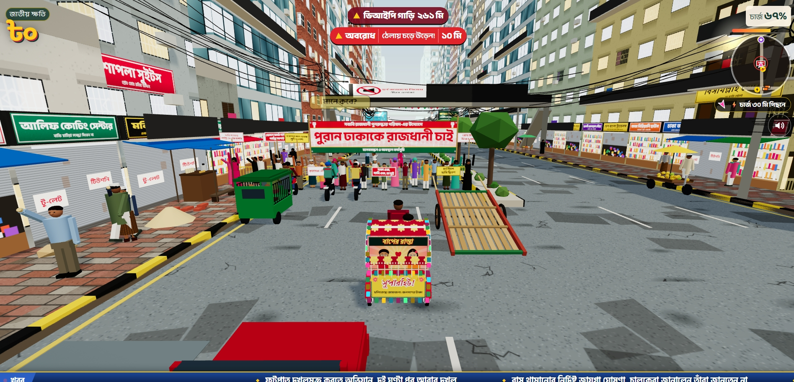

Baper Rasta is a comedy-focused game inspired by the streets, traffic congestion, and everyday experiences of Bangladesh. Featuring a colourful rickshaw, funny sound effects, familiar local details, and exaggerated street situations, the game offers a humorous take on navigating busy city roads.
Rather than focusing only on realistic driving, Baper Rasta builds much of its personality around local humour, unexpected incidents, and the familiar chaos of Dhaka traffic. From meme-style horn sounds to recognisable shop names and fictional news headlines, the game brings a distinctly Bangladeshi flavour to its gameplay.
What Is Baper Rasta?
Baper Rasta is a humorous game built around a Bangladesh-inspired street environment. Its scenery includes rickshaws, pedestrians, roadside shops, road dividers, overhead electrical wires, and other details associated with busy urban streets.
The game's distinctive appeal comes from combining these familiar surroundings with exaggerated situations and unexpected comedy. Instead of treating every road incident seriously, it uses humorous audio, unusual events, and satirical details to make ordinary driving situations entertaining.
The Story Behind the Game
According to the background information provided for this article, the idea behind Baper Rasta came from its creator's everyday experience of travelling through Dhaka and encountering traffic congestion.
Battery-powered rickshaws and the unpredictable movement of some road users were among the frustrations behind the game's concept. These experiences became inspiration for a game that approaches traffic problems through comedy and exaggeration rather than a conventional traffic simulation.
This background helps explain the game's focus on rickshaws, crowded roads, traffic-related incidents, and the everyday frustrations familiar to many people in Bangladesh.
Gameplay and Funny Sound Effects
Baper Rasta combines rickshaw driving with unexpected events and humorous audio. The official game page displays keyboard controls for movement, braking, honking, and other actions.
- Meme-style horn sounds: Honking can trigger funny audio clips instead of an ordinary vehicle horn, adding an unexpected comedic element.
- Funny collision sounds: When the rickshaw hits something, humorous sound effects can make the incident feel exaggerated and entertaining.
- Rickshaw driving: Players navigate a street environment inspired by Bangladesh's busy roads and everyday traffic.
- Keyboard controls: The game page provides instructions for driving, braking, honking, and other actions. Check the official website for the current control guide.
These features give the game its playful identity. The humour comes not only from driving but also from the unexpected sounds and situations that occur along the way.
Bangladeshi Streets and Local Details
One of Baper Rasta's most distinctive elements is its attention to familiar Bangladeshi street culture. The game environment includes roadside shops, pedestrians, footpaths, overhead electrical wires, road dividers, and colourful street scenes.
The supplied game information mentions shop names such as Bismillah Battery House, Rupsha Beauty Parlour, Bhai Bhai Traders, Mukta Jewellers, and Satata Dental Care. These references help the fictional environment resemble commercial streets found throughout Bangladesh.
Vehicle slogans such as "Mayer Doa" and "Sadharon Paribahan" add another familiar touch. Place names including Uttara, Gulistan, and Mirpur also connect the game environment with neighbourhoods in Dhaka.
Instead of relying only on generic city scenery, Baper Rasta uses local references to give its world a recognisable Bangladeshi personality.
Traffic Satire, Protests, and Public Reactions
Baper Rasta uses exaggerated situations to poke fun at traffic congestion, street disorder, and the everyday frustrations associated with busy roads. The game includes protest-related scenes, including a humorous scenario about making Old Dhaka the capital.

Another unusual feature is the news-style text that appears at the bottom of the game screen. These fictional headlines joke about traffic, protests, and the absurdity of urban congestion.
One example humorously suggests that people's walking speed has surpassed the speed of vehicles in the capital. These messages are part of the game's comedy and should not be mistaken for real news reports.
The supplied description also says that players may face retaliation from members of the public if their rickshaw hits pedestrians or causes damage in the game. This exaggerated consequence adds another layer to the game's chaotic humour.
Who Created Baper Rasta?
The creator information supplied for this article identifies Omor Faruqe Riyad, a software engineer in Dhaka, Bangladesh, as the person behind Baper Rasta.
His profile describes him as a software engineer and presents the game as a project connected to the everyday experience of travelling through Dhaka's roads. Baper Rasta transforms familiar frustrations into a humorous interactive experience.
The supplied screenshot displays the following game activity figures:
- 342K players
- 2.1 million runs played
- 51,000+ hours played
The screenshot attributes these figures to Google Analytics and shows a reporting period ending on 26 October 2026. These should be understood as the figures displayed in that screenshot, not as guaranteed current totals.
The creator's profile also invites enquiries about brand collaborations, in-game placements, and custom game ideas.
How to Play Baper Rasta
To explore Baper Rasta, visit its official website. The supplied screenshot shows a play button, a separate download control, and an on-screen guide explaining the keyboard controls.
Before starting, review the instructions displayed on the game page so you understand how to move, brake, honk, and use the other available actions.
Visit the official Baper Rasta website
Check the official website for the currently available play and download options, supported devices, and any system requirements. These details have not been independently confirmed for this article.
Frequently Asked Questions
What is Baper Rasta?
Baper Rasta is a humorous game inspired by Bangladeshi streets, rickshaw driving, traffic congestion, and local culture.
Who created Baper Rasta?
The creator profile supplied for this article identifies Omor Faruqe Riyad, a software engineer in Dhaka, as the game's creator.
What makes Baper Rasta funny?
Its humour includes meme-style horn sounds, funny collision effects, exaggerated traffic incidents, familiar street references, and fictional news-style headlines.
Where can I play Baper Rasta?
Visit the official website at baperrasta.com to check the available play and download options.
Are the in-game news headlines real?
The headlines described in this article are fictional jokes used for satire within the game. They should not be treated as verified real-world news.
Final Thoughts
Baper Rasta offers a humorous take on the streets of Bangladesh. Its rickshaw-focused gameplay, meme-style sound effects, familiar shop names, Dhaka neighbourhood references, and fictional news headlines give it a distinctive local identity.
For players who enjoy comedy games and references to everyday Bangladeshi life, Baper Rasta offers an unusual way to experience familiar traffic frustrations through humour and satire.
To learn more or try the game, visit the official Baper Rasta website.